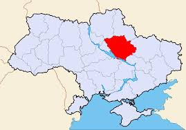

Полтавська область
Полтавська область (Полтавщина) - шоста за розміром область в Україні, яка була утворена 22 вересня 1937 року. Обласний центр - місто Полтава. Межує з Чернігівською, Сумською, Харківською, Дніпропетровською, Кіровоградською, Київською та Черкаською областями. До найважливіших галузей належать сільське господарство.
Основна інформація
- Обласний центр Полтава
- Заснована 22 вересня 1937
- Населеннz 1,4 млн
- Регіональний сайт
Цікаві факти про Полтавська область
- Українська літературна мова почала формуватися завдяки зусиллям Івана Котляревського, котрий першим написав свою поему Енеїда українською розмовною мовою., а народився і жив він саме на Полтавщині.
- У Полтаві діє принаймні 22 заклади громадського харчування де можна скуштувати галушки.
- У Полтаві існує місцевість під назвою колонія. Вона так називається бо у ХІХ ст. коли Англія ввела санкції проти Росії і перестала постачати їй сукно , Губернатор Полтавщини запросив німців , які облаштували тут швейну фабрику.
Полтавська область: розташування
Межує з Чернігівською та Сумською, на сході з Харківською, на півдні з Дніпропетровською та Кіровоградською, на заході з Київською та Черкаською областями України. Полтавська область займає площу 28,7 тис. км², що становить 4,8 % території Украї
Полтавська область займає площу 28,7 тис. км², що становить 4,8 % території України. За цим показником займає 6-те місце серед інших регіонів України. Протяжність території з півночі на південь 213,5 км, а із заходу на схід 245 км.
Крайня північна точка області — за 3,3 км на північ від села Білогорілка — розташована в Лохвицькому районі з координатами 50.518343° пн. ш. 33.065454° сх. д.. Крайня південна точка — лівий берег Кам'янського водосховища, в Кобеляцькому районі з координатами 48.750689° пн. ш. 34.297876° сх. д.. Крайня західна точка — за 1 км від села Смотрики — розташована в Пирятинському районі з координатами 50.283232° пн. ш. 32.089971° сх. д.. Крайня східна точка — за 1,5 км від селища Шевченка Карлівського району має координати 49.506532° пн. ш. 35.478676° сх. д.[6]
Полтавська область: клімат
Клімат визначається розташуванням у помірному кліматичному поясі, тип — помірно-континентальний.
Полтавська область - відпочинок в Україні
Україна - країна з різноманітним ландшафтом: гори, ліси, моря, високогірні озера і річки, лимани, водоспади, термальні джерела, карстові печери. Тому дуже легко обрати відпочинок на свій смак.Рекомендуэмо звернути увагу на відпочинок саме в Полтавській області та Полтаві